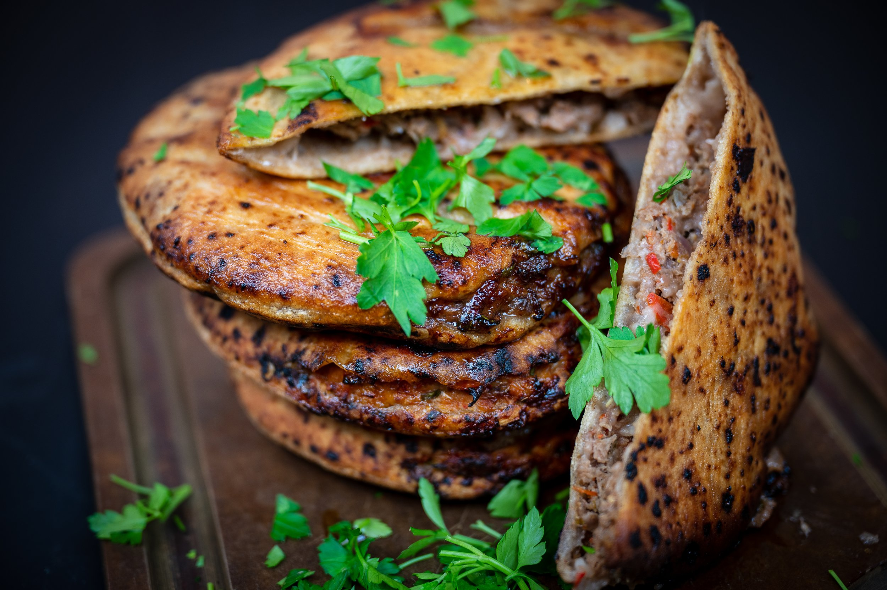

Hawawshi Recipe

Authentic Egyptian Hawawshi Recipe
Hawawshi is a delicious and popular Egyptian street food that consists of spiced ground meat stuffed inside a pocket of bread and then baked or grilled to perfection. This savory dish is bursting with flavor and makes for a satisfying meal or snack.
Ingredients
- 500 grams of ground beef or lamb
- 1 large onion, finely chopped
- 2-3 cloves of garlic, minced
- 1 large tomato, finely chopped
- 1 green bell pepper, finely chopped
- 1 tablespoon tomato paste
- 1 tablespoon ground cumin
- 1 tablespoon ground coriander
- 1 teaspoon paprika
- Salt and pepper, to taste
- Hot chili peppers (optional), finely chopped for extra heat
- Fresh parsley or cilantro, chopped
- Arabic flatbread (pita bread or baladi bread), cut into large rounds or squares
Steps
- Prepare the Filling: In a large mixing bowl, combine the ground meat, chopped onion, minced garlic, chopped tomato, chopped bell pepper, tomato paste, cumin, coriander, paprika, salt, pepper, and chopped chili peppers (if using). Mix well until all ingredients are thoroughly combined.
- Assemble the Hawawshi: Take a piece of the Arabic flatbread and place a generous amount of the meat mixture on one half of the bread. Fold the other half of the bread over the filling to create a pocket or sandwich.
- Cook the Hawawshi: Heat a grill pan or skillet over medium-high heat. Place the assembled hawawshi on the hot pan and cook for 4-5 minutes on each side, or until the bread is crispy and golden brown and the meat is cooked through.
- Serve and Enjoy! Remove the hawawshi from the pan and let it cool slightly before serving. Slice the hawawshi into halves or quarters and serve hot with a side of fresh parsley or cilantro.